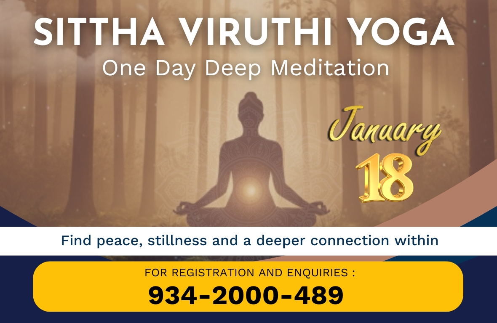

The Essence of Spiritual Healing
In the ancient Siddha and Yogic traditions, healing is understood not merely as the removal of symptoms, but as the restoration of harmony across all layers of our being. Sittha Viruthi Yoga honours this timeless wisdom, offering free spiritual healing that gently addresses disturbances at the physical, emotional, mental, and astral levels.
Free Individual Healing & Consultation
Sittha Viruthi Yoga offers free, compassionate, one-on-one spiritual healing for individuals facing:
- Long-term or recurring health challenges
- Emotional imbalance & inner turbulence
- Mental wellness issues
- Relationship disturbances—family, workplace, or society
- Planetary disturbances or karmic imbalances
- General lack of peace, clarity, or direction
Each healing session is personalized, helping the seeker regain balance and harmony. Follow-ups are also provided to monitor progress and deepen healing effects.
Healing the Physical Body (Annamaya Kosha)
The Annamaya Kosha is the physical sheath, formed and sustained by food. According to Siddha wisdom, the body is the sacred vessel through which higher purposes are fulfilled. When pranic flow is restored through spiritual healing, physical imbalances gradually dissolve, allowing vitality and natural intelligence to re-emerge.
Shariram khalu dharmasadhanam
The body is the instrument of righteous living. (Vedic wisdom) Caring for the body is honoring the divine work it is meant to perform.
Healing the Emotional Body (Manomaya Kosha)
The Manomaya Kosha governs emotions, feelings, and sensory impressions. Unresolved emotional patterns create energetic blockages that influence both health and relationships. Sittha Viruthi Yoga healing gently releases emotional turbulence, fostering acceptance, emotional clarity, and inner calm.
Uddhared atmanatanam
One must uplift oneself by oneself. (Bhagavad Gita 6:5) True emotional healing begins with inward awareness.
Healing the Mental & Wisdom Body (Vijnanamaya Kosha)
The Vijnanamaya Kosha is the sheath of intellect, discernment, and inner knowing. When the mind is clouded by excessive thought or confusion, clarity diminishes. Spiritual healing refines thought vibrations, strengthens intuition, and restores the ability to make aligned decisions.
Thirumoolar reveals this inner awakening:
Unmai arindhu unarndhay, ullam urughum;
Ullam urughum unarvu paramporul.
(When truth awakens within, the heart melts; in that melting, the Supreme is realized.)
Healing the Pranic & Astral Body (Pranamaya Kosha)
The Pranamaya Kosha governs life force and subtle energy channels, serving as the bridge between body and consciousness. Disturbances here may manifest as unexplained fatigue, restlessness, or karmic and planetary influences. Sittha Viruthi Yoga works on balancing prana, purifying the nadis, and harmonizing ida, pingala, and sushumna.
Prana shuddhi is the gateway to higher yogas.
Agasthiar, Jnana Rahasyam When prana flows freely, all other koshas naturally align.
Healing the Bliss Body (Anandamaya Kosha)
The Anandamaya Kosha is the innermost sheath—the body of bliss. This is the state where the soul rests in its natural condition of peace, contentment, and quiet joy. True and complete healing culminates here, where suffering dissolves and life is experienced with gratitude and grace.
Sittha Viruthi Yoga awakens this bliss body by releasing deep karmic impressions and restoring union with one’s inner source.
Anando brahmeti vyajanat
Brahman is Bliss itself. (Taittiriya Upanishad) When Anandamaya Kosha shines, healing becomes wholeness.
Healing Through Universal Energies – The Five Elements & Planetary Vibrations
Sittha Viruthi Yoga is a Siddha-based spiritual healing system that restores harmony across the five koshas (sheaths of existence)—physical, emotional, mental, pranic, and blissful.
- Earth (Prithvi): stability, bones, grounding
- Water (Ap): flow, emotions, blood
- Fire (Agni): digestion, willpower, transformation
- Air (Vayu): breath, movement, thoughts
- Ether (Akasha): space, intuition, consciousness
Planetary energies (Navagrahas) also shape our mental states, emotional tendencies, and life events. Spiritual healing works subtly with these cosmic frequencies, helping one harmonize with universal rhythms.
Yatha pinde tatha brahmande — As is the individual, so is the universe. (Vedic Mahavakya)
When we align our inner elements with celestial energies, life flows with greater ease, purpose, and divine support.



Healing Course (Registration-Based)
– Learning the Art of Energy Healing
For individuals who wish to go beyond receiving healing and learn to become healers themselves, Sittha Viruthi Yoga offers a profound Healing Course.
Aathithya Welfare Farm
Nurturing Health Through Indian Traditional Wisdom
Aathithya Welfare Farm, a branch of Siththa Viruthi Yoga, is dedicated to taking the profound wisdom of Indian Traditional Medicine—Siddha and Ayurveda—to people from all walks of life. Guided by experienced Siddha and Ayurvedic doctors, the centre offers holistic treatments rooted in age-old healing systems that focus on balance, prevention, and total well-being.
Every month, free community medical camps such as Kalikkam (Siddha Eye Care) and Swarna Prashanam (Ayurvedic Immune-Support Formulation for Children) are conducted for the public. Foot Reflexology services are also available as part of their wellness initiatives.
Aathithya Herbal
Ancient Wisdom. Certified Excellence. Natural Healing.
Rooted in the sacred Indian systems of Siddha and Ayurveda, Aathithya Herbal brings forward time-tested healing wisdom refined for today’s world. These ancient sciences—once the backbone of holistic healthcare in India—continue to guide humanity toward natural balance, vitality, and long-lasting health.
Backed by State Drug-Licensing Authority, ISO 22000:2005 certification, FSSAI approval, and WHO-GMP compliance, every Aathithya product is manufactured under stringent global quality and safety standards. Our philosophy, “Food as Medicine,” is not just a belief—it is a disciplined practice ensured through research, quality sourcing, and ethical manufacturing.